San Luis Valley aeromagnetic levelling#
[1]:
%load_ext autoreload
%autoreload 2
import logging
import cmocean
import harmonica as hm
import matplotlib.pyplot as plt
import numpy as np
import pandas as pd
import verde as vd
import airbornegeo
# setup logging to get some additional info from the airbornegeo functions
logging.getLogger("airbornegeo").setLevel("INFO")
logging.basicConfig()
Load data#
[ ]:
data_df = pd.read_csv("data/san_luis_magnetics.csv")
# # every x points
# data_df = data_df[::10]
# # every x line
# data_df = data_df[
# data_df.line.isin(data_df.line.unique()[data_df.line.unique() % 8 == 0])
# ]
# define survey lines (0) vs tie lines (1)
data_df["line_type"] = np.where(data_df.line_type == "line", 0, 1)
data_df.head()
[3]:
data_df.describe()
[3]:
| line | line_type | lat84 | lon84 | easting | northing | unixtime | height | unlevelled_tfa | levelled_tfa | |
|---|---|---|---|---|---|---|---|---|---|---|
| count | 1.271290e+06 | 1.271290e+06 | 1.271290e+06 | 1.271290e+06 | 1.271290e+06 | 1.271290e+06 | 1.271290e+06 | 1.271290e+06 | 1.271290e+06 | 1.271290e+06 |
| mean | 3.201125e+02 | 1.701555e-01 | 3.706693e+01 | -1.058167e+02 | 4.274058e+05 | 4.102621e+06 | 1.100047e+09 | 2.536180e+03 | -5.682331e+02 | -5.682027e+02 |
| std | 1.977824e+02 | 3.757695e-01 | 2.912172e-01 | 1.592203e-01 | 1.410116e+04 | 3.232789e+04 | 2.658211e+06 | 1.042036e+02 | 2.246053e+02 | 2.223726e+02 |
| min | 1.000000e+00 | 0.000000e+00 | 3.644480e+01 | -1.061741e+02 | 3.960613e+05 | 4.033616e+06 | 1.039259e+09 | 2.250880e+03 | -2.336730e+03 | -2.334330e+03 |
| 25% | 1.450000e+02 | 0.000000e+00 | 3.684740e+01 | -1.059410e+02 | 4.162816e+05 | 4.078258e+06 | 1.099473e+09 | 2.472980e+03 | -7.018800e+02 | -7.003200e+02 |
| 50% | 2.990000e+02 | 0.000000e+00 | 3.710280e+01 | -1.058133e+02 | 4.275882e+05 | 4.106630e+06 | 1.099639e+09 | 2.506760e+03 | -5.773700e+02 | -5.767200e+02 |
| 75% | 4.980000e+02 | 0.000000e+00 | 3.731080e+01 | -1.056870e+02 | 4.388134e+05 | 4.129647e+06 | 1.100764e+09 | 2.578120e+03 | -4.536800e+02 | -4.550900e+02 |
| max | 6.500000e+02 | 1.000000e+00 | 3.755870e+01 | -1.054484e+02 | 4.602512e+05 | 4.157199e+06 | 1.102070e+09 | 3.136350e+03 | 2.083250e+03 | 1.973760e+03 |
[4]:
airbornegeo.median_line_spacing(
data_df[data_df.line_type == 0][::20], # every 20th point to speed up
line_column="line",
)
[4]:
np.float64(215.31550826626304)
[5]:
airbornegeo.median_line_spacing(
data_df[data_df.line_type == 1][::20], # every 20th point to speed up
line_column="line",
)
[5]:
np.float64(1007.0896027699907)
[ ]:
# Create Survey object with column bindings
survey = airbornegeo.Survey(
data_df,
line_column="line",
line_type_column="line_type",
distance_column="distance_along_line",
)
survey.along_track_distance()
data_df = survey.data
[ ]:
survey
[7]:
fig, axs = plt.subplots(1, 2, figsize=(10, 6))
df = data_df[::20]
ax = df[df.line_type == 0].plot.scatter(
"easting",
"northing",
c="line",
s=0.02,
cmap="rainbow",
ax=axs[0],
colorbar=False,
title="Lines",
)
ax.set_aspect("equal")
plt.colorbar(ax.collections[0], ax=ax, shrink=0.5)
ax = df[df.line_type == 1].plot.scatter(
"easting",
"northing",
c="line",
s=0.02,
cmap="rainbow",
ax=axs[1],
colorbar=False,
title="Ties",
)
ax.set_aspect("equal")
plt.colorbar(ax.collections[0], ax=ax, shrink=0.5)
plt.tight_layout()
plt.show()
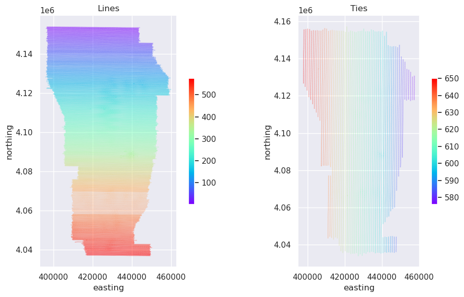
Cross-over levelling#
Find intersections#
[ ]:
survey.create_intersection_table(method="groups")
inters = survey.intersections
Add intersections as rows to the dataframe#
[ ]:
survey.interpolate_intersections(
to_interp="unlevelled_tfa",
interp_on="distance_along_line",
window_width=500,
method="cubic",
extrapolate=True,
)
data_df = survey.data
inters = survey.intersections
[ ]:
survey.lines_without_intersections()
Calculate initial cross-over errors#
[ ]:
survey.calculate_crossover_errors(data_col="unlevelled_tfa")
inters = survey.intersections
[14]:
airbornegeo.plotly_points(
inters,
color_col=inters.columns[-1],
hover_cols=["line1", "line2"],
robust=True,
absolute=True,
cmap="balance",
size=3,
edge_width=0,
)
Data type cannot be displayed: application/vnd.plotly.v1+json
[15]:
ax = inters[inters.columns[-1]].plot.hist(bins=20)
ax.set_xlabel("mistie values (nT)")
ax.set_title(
f"Histogram of mistie values; RMSE: {round(airbornegeo.rmse(inters[inters.columns[-1]]), 2)} nT"
);
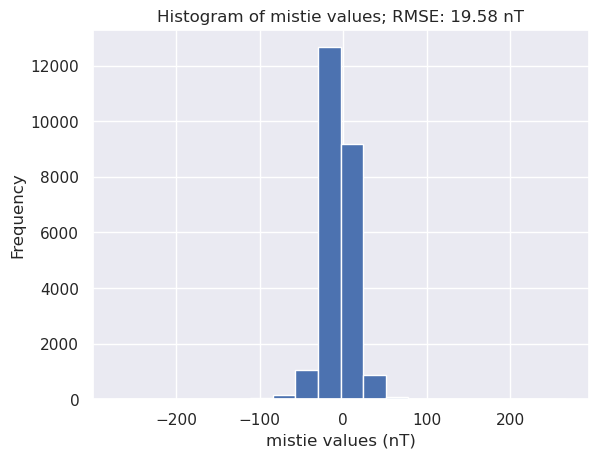
[ ]:
survey.alternating_iterative_line_levelling(
data_col="unlevelled_tfa",
levelled_col="mag_levelled_alternating_trend1",
degree=1,
max_iterations=10,
rms_percent_change_tolerance=25,
plot_dynamic_convergence=True,
)
data_df = survey.data
inters_alternating_iterative = survey.intersections
[17]:
airbornegeo.plot_levelling_convergence(inters_alternating_iterative)
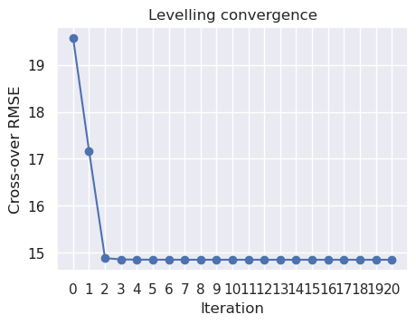
[18]:
fig, axs = plt.subplots(1, 3, figsize=(15, 40))
data_df["levelling_correction"] = (
data_df.mag_levelled_alternating_trend1 - data_df.unlevelled_tfa
)
df = data_df[::10]
max_abs = vd.maxabs(df.unlevelled_tfa, percentile=95)
ax = df.plot.scatter(
"easting",
"northing",
c="unlevelled_tfa",
s=0.1,
ax=axs[0],
cmap=cmocean.cm.balance,
vmin=-max_abs,
vmax=max_abs,
colorbar=False,
title="Unlevelled",
)
ax.set_aspect("equal")
plt.colorbar(ax.collections[0], ax=ax, shrink=0.1)
max_abs_level_corr = vd.maxabs(df.levelling_correction, percentile=99.5)
ax = df.plot.scatter(
"easting",
"northing",
c="levelling_correction",
s=0.1,
ax=axs[1],
cmap=cmocean.cm.balance,
vmin=-max_abs_level_corr,
vmax=max_abs_level_corr,
colorbar=False,
title="Levelling correction",
)
ax.set_yticks([])
ax.set_aspect("equal")
plt.colorbar(ax.collections[0], ax=ax, shrink=0.1)
ax = df.plot.scatter(
"easting",
"northing",
c="mag_levelled_alternating_trend1",
s=0.1,
ax=axs[2],
cmap=cmocean.cm.balance,
vmin=-max_abs,
vmax=max_abs,
colorbar=False,
title="Alternating iterative levelling, trend 1",
)
ax.set_yticks([])
ax.set_aspect("equal")
plt.colorbar(ax.collections[0], ax=ax, shrink=0.1)
plt.tight_layout()
plt.show()
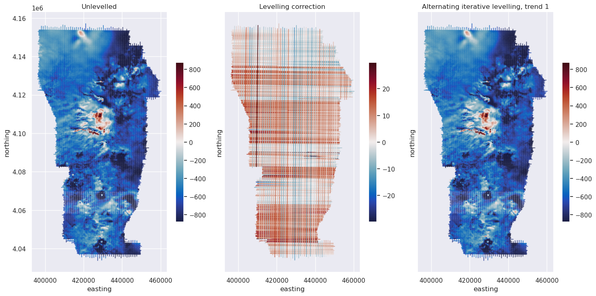
[19]:
data_df.levelling_correction.plot.hist(bins=100)
[19]:
<Axes: ylabel='Frequency'>
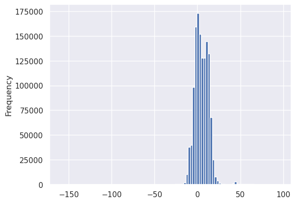
[20]:
data_df.groupby("line").levelling_correction.mean().sort_values()
[20]:
line
340 -64.920895
343 -34.627004
641 -12.602446
352 -12.141412
611 -11.448999
...
536 23.436915
542 26.863721
346 36.065001
637 43.147454
330 54.446548
Name: levelling_correction, Length: 649, dtype: float64
[21]:
airbornegeo.plot_line_and_crosses(
data_df,
line=343,
x="distance_along_line",
y=["unlevelled_tfa", "mag_levelled_alternating_trend1"],
y_axes=[1, 1],
plot_inters=[False, False],
line_column="line",
)
Data type cannot be displayed: application/vnd.plotly.v1+json
[22]:
# save to csv
data_df.to_csv("data/san_luis_magnetics_crossover_levelled.csv", index=False)
[23]:
levelled_df = pd.read_csv("data/san_luis_magnetics_crossover_levelled.csv")
levelled_df = levelled_df[levelled_df.is_intersection == False]
levelled_df = levelled_df.drop(
columns=[
"is_intersection",
"intersecting_line",
"unlevelled_tfa_interpolation_type",
]
)
levelled_df
[23]:
| line | line_type | lat84 | lon84 | easting | northing | unixtime | height | unlevelled_tfa | levelled_tfa | geometry | distance_along_line | mag_levelled_alternating_trend1 | levelling_correction | |
|---|---|---|---|---|---|---|---|---|---|---|---|---|---|---|
| 0 | 1 | 0.0 | 37.5256 | -105.6335 | 443997.28 | 4153366.29 | 1.099466e+09 | 2488.22 | -837.13 | -841.75 | POINT (443997.28 4153366.29) | 0.000000 | -839.553256 | -2.423256 |
| 1 | 1 | 0.0 | 37.5256 | -105.6338 | 443974.30 | 4153366.44 | 1.099466e+09 | 2488.37 | -837.06 | -841.68 | POINT (443974.3 4153366.44) | 22.980490 | -839.481162 | -2.421162 |
| 2 | 1 | 0.0 | 37.5256 | -105.6341 | 443951.32 | 4153365.49 | 1.099466e+09 | 2488.51 | -837.00 | -841.62 | POINT (443951.32 4153365.49) | 45.980118 | -839.419067 | -2.419067 |
| 3 | 1 | 0.0 | 37.5256 | -105.6343 | 443927.47 | 4153365.65 | 1.099466e+09 | 2488.66 | -836.92 | -841.54 | POINT (443927.47 4153365.65) | 69.830654 | -839.336894 | -2.416894 |
| 4 | 1 | 0.0 | 37.5256 | -105.6346 | 443904.49 | 4153365.80 | 1.099466e+09 | 2488.80 | -836.87 | -841.49 | POINT (443904.49 4153365.8) | 92.811144 | -839.284800 | -2.414800 |
| ... | ... | ... | ... | ... | ... | ... | ... | ... | ... | ... | ... | ... | ... | ... |
| 1319461 | 650 | 1.0 | 37.2819 | -106.1526 | 397822.43 | 4126738.17 | 1.099469e+09 | 2575.13 | -414.45 | -428.37 | POINT (397822.43 4126738.17) | 29117.045891 | -416.167467 | -1.717467 |
| 1319462 | 650 | 1.0 | 37.2816 | -106.1526 | 397822.13 | 4126713.76 | 1.099469e+09 | 2574.66 | -413.57 | -427.49 | POINT (397822.13 4126713.76) | 29141.457735 | -415.285893 | -1.715893 |
| 1319463 | 650 | 1.0 | 37.2814 | -106.1526 | 397820.96 | 4126690.47 | 1.099469e+09 | 2574.23 | -412.73 | -426.66 | POINT (397820.96 4126690.47) | 29164.777104 | -414.444389 | -1.714389 |
| 1319464 | 650 | 1.0 | 37.2812 | -106.1526 | 397820.66 | 4126666.07 | 1.099469e+09 | 2573.80 | -411.87 | -425.80 | POINT (397820.66 4126666.07) | 29189.178948 | -413.582816 | -1.712816 |
| 1319465 | 650 | 1.0 | 37.2810 | -106.1526 | 397820.36 | 4126641.66 | 1.099469e+09 | 2573.37 | -411.11 | -425.04 | POINT (397820.36 4126641.66) | 29213.590792 | -412.821242 | -1.711242 |
1271290 rows × 14 columns
Assessing levelling errors#
[ ]:
# block_reduce returns a NEW Survey (original untouched)
temp_survey = airbornegeo.Survey(
levelled_df,
line_column="line",
distance_column="distance_along_line",
)
temp_survey = temp_survey.block_reduce(
np.median,
spacing=500,
reduce_by="distance_along_line",
)
levelled_df = temp_survey.data
levelled_df = levelled_df.dropna(
subset=["easting", "northing", "height", "unlevelled_tfa"]
)
levelled_df
[ ]:
# save to csv
levelled_df.to_csv(
"data/san_luis_magnetics_crossover_levelled_blocked.csv", index=False
)
[ ]:
levelled_df = pd.read_csv("data/san_luis_magnetics_crossover_levelled_blocked.csv")
levelled_df
| distance_along_line | tmp | line | line_type | lat84 | lon84 | easting | northing | unixtime | height | unlevelled_tfa | levelled_tfa | mag_levelled_alternating_trend1 | levelling_correction | |
|---|---|---|---|---|---|---|---|---|---|---|---|---|---|---|
| 0 | 242.202999 | 0.0 | 1 | 0.0 | 37.52550 | -105.63625 | 443755.150 | 4153363.960 | 1.099466e+09 | 2489.920 | -836.780 | -841.380 | -839.183465 | -2.401370 |
| 1 | 748.743819 | 0.0 | 1 | 0.0 | 37.52545 | -105.64200 | 443248.785 | 4153358.055 | 1.099466e+09 | 2489.705 | -837.305 | -841.865 | -839.653928 | -2.355212 |
| 2 | 1256.177706 | 0.0 | 1 | 0.0 | 37.52540 | -105.64775 | 442741.535 | 4153351.390 | 1.099466e+09 | 2484.810 | -836.955 | -841.450 | -839.263972 | -2.308972 |
| 3 | 1765.351097 | 0.0 | 1 | 0.0 | 37.52530 | -105.65350 | 442232.525 | 4153346.520 | 1.099466e+09 | 2481.435 | -836.375 | -840.730 | -838.639668 | -2.262573 |
| 4 | 2263.870087 | 0.0 | 1 | 0.0 | 37.52520 | -105.65910 | 441734.130 | 4153343.550 | 1.099466e+09 | 2477.690 | -836.700 | -840.880 | -838.917146 | -2.217146 |
| ... | ... | ... | ... | ... | ... | ... | ... | ... | ... | ... | ... | ... | ... | ... |
| 60765 | 26940.990139 | 0.0 | 650 | 1.0 | 37.30150 | -106.15260 | 397850.700 | 4128913.810 | 1.099469e+09 | 2600.020 | -502.400 | -508.450 | -504.257953 | -1.857953 |
| 60766 | 27441.460867 | 0.0 | 650 | 1.0 | 37.29690 | -106.15260 | 397848.170 | 4128413.400 | 1.099469e+09 | 2594.310 | -467.970 | -479.400 | -469.795692 | -1.825692 |
| 60767 | 27955.251045 | 0.0 | 650 | 1.0 | 37.29230 | -106.15260 | 397841.905 | 4127899.715 | 1.099469e+09 | 2588.835 | -447.865 | -463.670 | -449.657572 | -1.792572 |
| 60768 | 28470.101452 | 0.0 | 650 | 1.0 | 37.28770 | -106.15260 | 397834.740 | 4127384.930 | 1.099469e+09 | 2583.350 | -479.410 | -485.740 | -481.178681 | -1.759383 |
| 60769 | 28972.788468 | 0.0 | 650 | 1.0 | 37.28310 | -106.15260 | 397825.070 | 4126882.390 | 1.099469e+09 | 2577.460 | -421.590 | -435.750 | -423.316979 | -1.726979 |
60770 rows × 14 columns
[ ]:
coords = (
levelled_df.easting,
levelled_df.northing,
levelled_df.height,
)
[ ]:
eqs_kwargs = dict( # noqa: C408
damping=0.01,
depth="default",
block_size=500,
)
# eqs = hm.EquivalentSourcesGB(
# window_size=40e3,
# random_state=42,
# **eqs_kwargs,
# )
eqs = hm.EquivalentSources(**eqs_kwargs)
bytes = eqs.estimate_required_memory(coords)
print(f"{bytes / 1e9} GB ram required")
10.41403336 GB ram required
[ ]:
eqs.fit(coords, levelled_df.unlevelled_tfa.to_numpy())
EquivalentSources(block_size=500, damping=0.01)In a Jupyter environment, please rerun this cell to show the HTML representation or trust the notebook.
On GitHub, the HTML representation is unable to render, please try loading this page with nbviewer.org.
Parameters
| damping | 0.01 | |
| points | None | |
| depth | 'default' | |
| block_size | 500 | |
| parallel | True | |
| dtype | 'float64' |
[ ]:
# Define grid coordinates
grid_coords = vd.grid_coordinates(
region=vd.pad_region(vd.get_region(coords), 2e3),
spacing=200,
extra_coords=levelled_df.height.mean(), # upward continue
adjust="region",
)
grid_unlevelled = eqs.grid(grid_coords)
# grid_unlevelled = vd.distance_mask(
# (coords[0], coords[1]), maxdist=2e3, grid=grid_unlevelled
# )
grid_unlevelled = grid_unlevelled.reset_coords(names="upward").scalars
grid_unlevelled.plot().axes.set_aspect("equal")
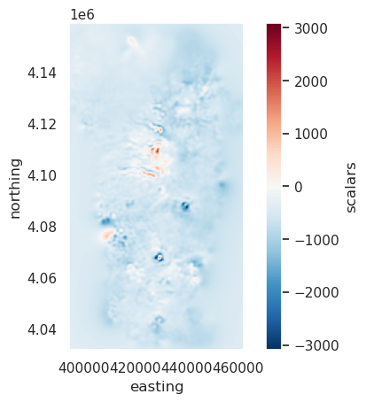
[ ]:
eqs.fit(coords, levelled_df.mag_levelled_alternating_trend1)
EquivalentSources(block_size=500, damping=0.01)In a Jupyter environment, please rerun this cell to show the HTML representation or trust the notebook.
On GitHub, the HTML representation is unable to render, please try loading this page with nbviewer.org.
Parameters
| damping | 0.01 | |
| points | None | |
| depth | 'default' | |
| block_size | 500 | |
| parallel | True | |
| dtype | 'float64' |
[ ]:
grid_levelled = eqs.grid(grid_coords)
grid_levelled = grid_levelled.reset_coords(names="upward").scalars
grid_levelled.plot().axes.set_aspect("equal")
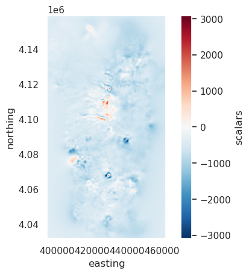
[ ]:
(grid_levelled - grid_unlevelled).plot(robust=True).axes.set_aspect("equal")
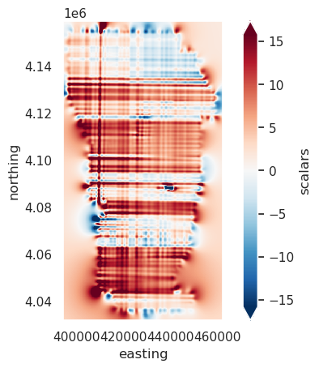
[ ]:
hg_unlevelled = airbornegeo.filter_grid(
grid_unlevelled, filter_type="horizontal_gradient"
)
vmin, vmax = vd.minmax(
hg_unlevelled,
min_percentile=8,
max_percentile=92,
)
hg_unlevelled.plot(
# robust=True,
vmin=vmin,
vmax=vmax,
)
<matplotlib.collections.QuadMesh at 0x7f728d5be350>
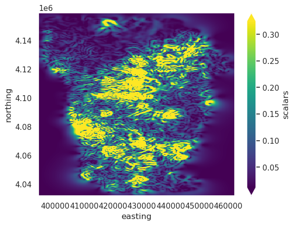
[ ]:
hg_levelled = airbornegeo.filter_grid(grid_levelled, filter_type="horizontal_gradient")
vmin, vmax = vd.minmax(
hg_levelled,
min_percentile=8,
max_percentile=92,
)
hg_levelled.plot(
# robust=True,
vmin=vmin,
vmax=vmax,
)
<matplotlib.collections.QuadMesh at 0x7f72905b4410>
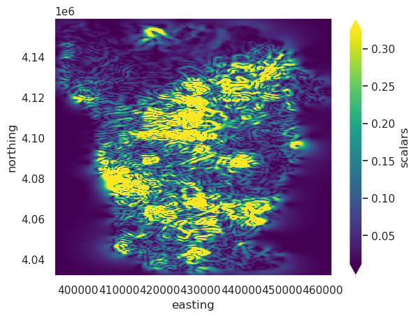
[ ]:
(hg_levelled - hg_unlevelled).plot(robust=True).axes.set_aspect("equal")
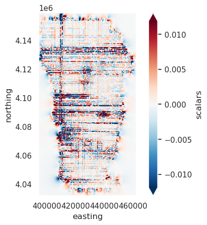
[ ]:
fig, ax = plt.subplots(1, 1, sharex=True)
ax.plot(
["Unlevelled", "Levelled"],
[airbornegeo.rmse(hg_unlevelled), airbornegeo.rmse(hg_levelled)],
c="b",
)
ax.set_ylabel("Root mean square of gridded data (nT)", color="b")
ax.tick_params(axis="y", colors="b", which="both")
ax2 = ax.twinx()
ax2.plot(
["Unlevelled", "Levelled"],
[
airbornegeo.rmse(hg_unlevelled, as_median=True),
airbornegeo.rmse(hg_levelled, as_median=True),
],
c="g",
)
ax2.grid(visible=False)
ax2.set_ylabel("Root median square of gridded data (nT)", color="g")
ax2.tick_params(axis="y", colors="g", which="both")
plt.title("Quantifying levelling errors with RMS");
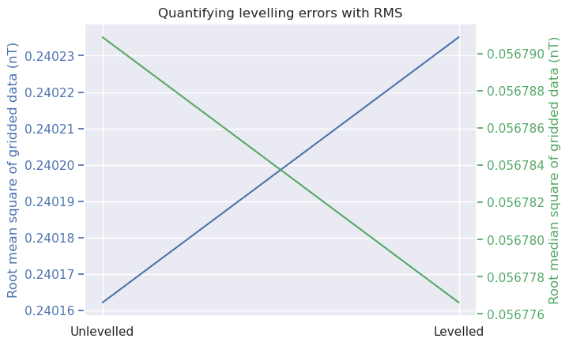
[ ]:
import xrft
powerspec_unlevelled = xrft.power_spectrum(grid_unlevelled)
vmin, vmax = vd.minmax(
powerspec_unlevelled,
min_percentile=8,
max_percentile=92,
)
powerspec_unlevelled.plot(
vmin=vmin,
vmax=vmax,
)
<matplotlib.collections.QuadMesh at 0x7f72902eafd0>
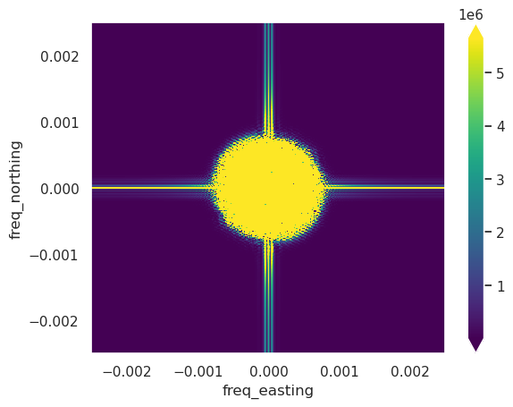
[ ]:
powerspec_levelled = xrft.power_spectrum(grid_levelled)
vmin, vmax = vd.minmax(
powerspec_levelled,
min_percentile=8,
max_percentile=92,
)
powerspec_levelled.plot(
vmin=vmin,
vmax=vmax,
)
<matplotlib.collections.QuadMesh at 0x7f72915e4190>
[ ]:
dif = powerspec_levelled - powerspec_unlevelled
maxabs = vd.maxabs(
dif,
percentile=90,
)
dif.plot(
vmin=-maxabs,
vmax=maxabs,
)
<matplotlib.collections.QuadMesh at 0x7f728bf08cd0>
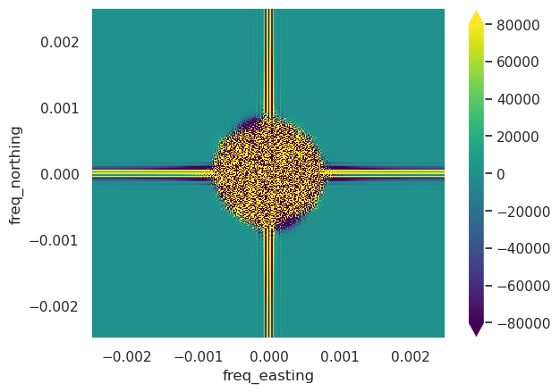
[ ]: